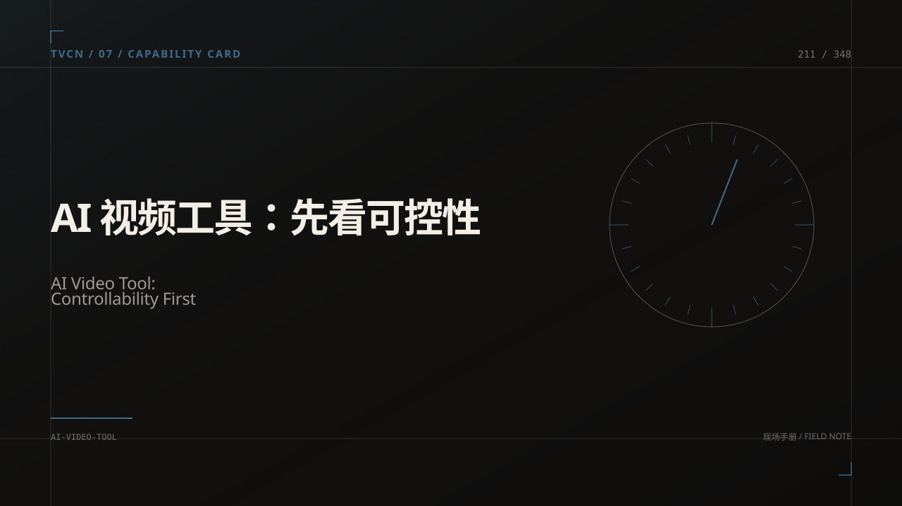

工具 / 能力卡
AI 视频工具：先看可控性
AI 视频工具先看可控性：能不能锁角色、锁镜头、锁时长；只看样片会被骗。
3 分钟阅读 · 现场手册TVCN 工具组编辑 2026-11
需要真实人物、新闻现场、精确对白或可追责素材时，生成工具不能替代实拍。没有授权链的镜头不进交付。
先看可控性，不看演示
- 镜头控制：能否指定景别、角度、焦段和运动；只能“再来一次”的工具不适合商单。
- 一致性：角色、服装、光线和场景能否跨镜头保持；先测三镜头再批量。
- 授权与输出：商用许可、输出分辨率、水印和元数据；不要等交片才发现限制。
现场
用同一条提示测三样：角色是否一致、镜头是否可控、时长是否够；三项都过再付费。
怎么做
- 用同一条提示测三样：角色是否一致、镜头是否可控、时长是否够。
- 三项都过再付费。
- 把失败案例一起存下来。
验收
- 同一条提示下角色在三个镜头里保持一致。
- 镜头运动和时长能被具体参数控制。
- 失败案例有保存，知道边界在哪里。
意图分工：本页负责「AI 视频工具：先看可控性」的可执行细节；同集群先读 AI 工具链：生成、配音、渲染 建立总判断，再回到本页。
图片说明：本页封面、图解与步骤图是编辑示意或结构图，不是本页实测照片，也不能当作器材测试证据；AI 辅助生成的图会在图注标出。判断器材或画面，以正文的测试条件与现场记录为准。

这是为这一页画的编辑封面，不是实拍。TVCN 图解 编辑示意图，不是本页实测照片。看“用同一条提示测三样：角色是否一致、镜…”和“三项都过再付费”两处，判断这个参数能不能对应到一个具体的拍摄问题。 编辑示意图，不是本页实测照片。
意图分工：本页负责「AI 视频工具：先看可控性」的可执行细节；同集群先读 AI 工具链：生成、配音、渲染 建立总判断，再回到本页。